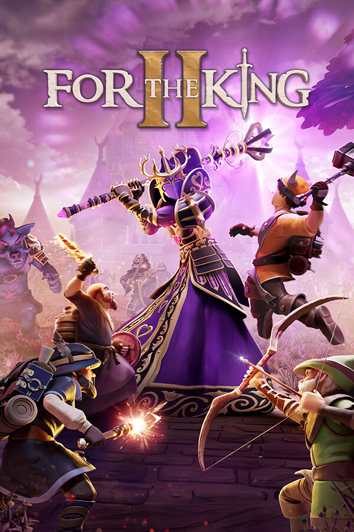

For The King II
For The King II
Details
 |
|
| Playtime | Not Played |
| Last Activity | Never |
| Added | 7/11/2026 9:49:32 |
| Modified | 7/11/2026 9:49:44 |
| Completion Status | Not Interested |
| Library | PlayStation |
| Source | PlayStation |
| Platform | Sony PlayStation 5 |
| Release Date | 11/2/2023 |
| Community Score | 70 |
| Critic Score | 76 |
| User Score | |
| Genre | Adventure Indie RPG Strategy |
| Developer | IronOak Games |
| Publisher | Curve Games |
| Feature | Achievements Adjustable Difficulty Adjustable Text Size Camera Comfort Cloud Saves Co-Op Cross-Platform Multiplayer Custom Volume Controls Dualsense Controller Support Dualshock Controller Support Family Sharing Full Controller Support Keyboard Only Option Mouse Only Option Multi-Player Online Co-Op Remote Play Together Save Anytime Shared/Split Screen Shared/Split Screen Co-Op Single-Player Trading Cards |
| Links | Steam Official Website YouTube Discord Subreddit Twitch Community Wiki Wikipedia Xbox Playstation Bluesky |
| Tag | PlayStation Plus |
Description

Once beloved by her people, Queen Rosomon has turned against her subjects, casting them into servitude in the darkness of Fahrul’s mines whilst building alliances with sinister and malevolent forces.
Gather your party in four player co-op or adventure alone through Fahrul as you risk everything to fight the tyrannical queen and bring an end to her oppressive reign.
From the creators of For The King, the much-loved RPG that blends roguelite and tabletop gameplay comes a new chapter in Fahrul’s history, designed on an updated engine bringing innovation and gameplay refinement for returning heroes and new adventurers alike.

For The King II is easy for anyone to pick up and play, but takes skill, patience, and strategic excellence to master whilst remaining infinitely replayable with a procedurally generated map that ensures no two playthroughs will ever be the same. Unique yet familiar dice roll inspired movement, encounter and combat mechanics add even more spontaneity and variety as your fortunes rise and fall on the roll of the dice.


For The King II provides a complete campaign with over 30 hours of gameplay, split into 7 separate adventures, each narratively linked. The journey is long and the path is treacherous but fear not, if your party fails you will start stronger and wiser on your next playthrough with better starting items to draft into your loadout.


Roll up, roll up! Put your skills to the ultimate test with the infinite dungeon mode - Dark Carnival. Led by the devious Ringmaster, your goal is to conquer as many floors as possible before you meet your inevitable demise. Collect carnival tickets to explore new paths, discover a host of themed rooms and spin the Wheel of Death as you try to escape your fate. How far will you make it through the Dark Carnival?


Traverse Fahrul solo or with up-to three friends in four-player co-op. As a solo player you can control all characters in your party, giving you complete ownership of the campaign map and combat strategy whilst in four-player co-op you must coordinate and negotiate with your party members. Play online multiplayer with your friends controlling your own character(s) or play offline co-op on the same PC.


Inspired by turn-based classics, For The King II adds strategic depth to much-loved combat mechanics with the new Battle Grid, where movement and position provide you and your enemies with strategic buffs and penalties. Defend the back row by equipping a mighty Tower Shield, push enemies into lethal pools of burning fire, or entangle melee troops with dark magic cast with weapons looted from vanquished foes. The choice is yours!


Fahrul is both beautiful and deadly in equal measure. On your journey you will encounter a wealth of diverse biome environments brought to life in a breathtaking art style. From lush forests, toxic swamps and lava-filled wastelands to pirate (no scratch that!) Merling-infested tropical seas, For The King II transports you deep into the wonders of Fahrul, leading you further than ever before into this stunningly-imagined land of adventure.